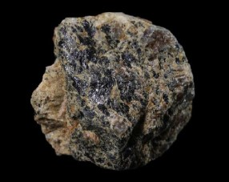

|
Tecnécio |

Utilizações:
-Como agente em imageamento médico
-O isótopo 95Tc é usado como marcador radioativo
-Poderia ser utilizado como um catalisador ou inibidor de corrosão (no entanto a sua radioatividade torna isso difícil industrialmente)
O tecnécio é feito artificialmente.
 -Radioativo
-Radioativo